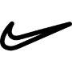

Um pouco sobre a Marca
Qual a história do símbolo da Nike? 🧐
O logo foi adotado pela empresa em 1937 e representa a capacidade dos motores da marca, que dominam o mar, terra e ar.
A Nike dispensa comentários neste caso. Seu famoso símbolo chamado Swoosh, possui uma simplicidade que inspira até hoje
inúmeras outras marcas. Foi criado em 1971 pelo designer Carolyn Davidson.

Alguns dos tenis mais famosos da marca em lista

- Nike Air Force 1 Low
- E aqui vai outra curiosidade: o nike air force 1 recebeu esse nome em referência ao avião Air Force One, que transportava o presidente dos Estados Unidos.
- Nike Air Max 270
- Desenhado por Tinker Hatfield, o Nike Air Max 1 foi o primeiro tênis a oferecer uma “janela” na sola. O criador inovador foi inspirado pelo Centro Georges Pompidou, em Paris, que tornava visível a tecnologia Air.
- Nike Air Vapormax Plus
- Desde o seu lançamento há 20 anos, algumas sapatilhas têm continuado a moldar culturas, como é o caso das Nike Air Max Plus. A sua silhueta distinta apresenta um estilo inspirado nas linhas irregulares das palmeiras, com um Swoosh pequeno, paletas de cores vibrantes e amortecimento Tuned Air.
ESSE SAO UNS DOS 10 MAIS USADOS
CLIQUE AQUI para mais informações.
ATE MAIS 😄
LINK DO SITE DA NIKE ABAIXO ↓
https://www.nike.com.br